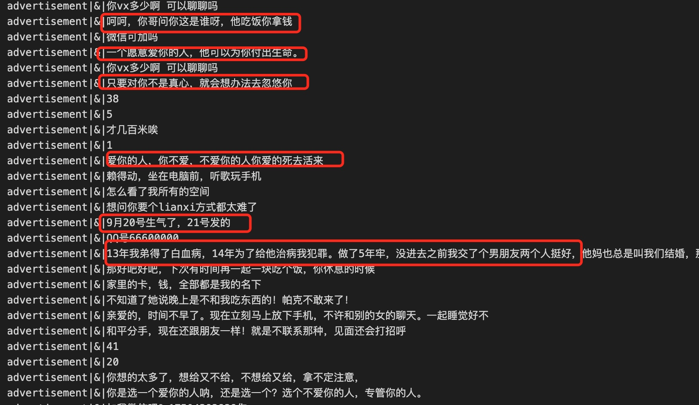
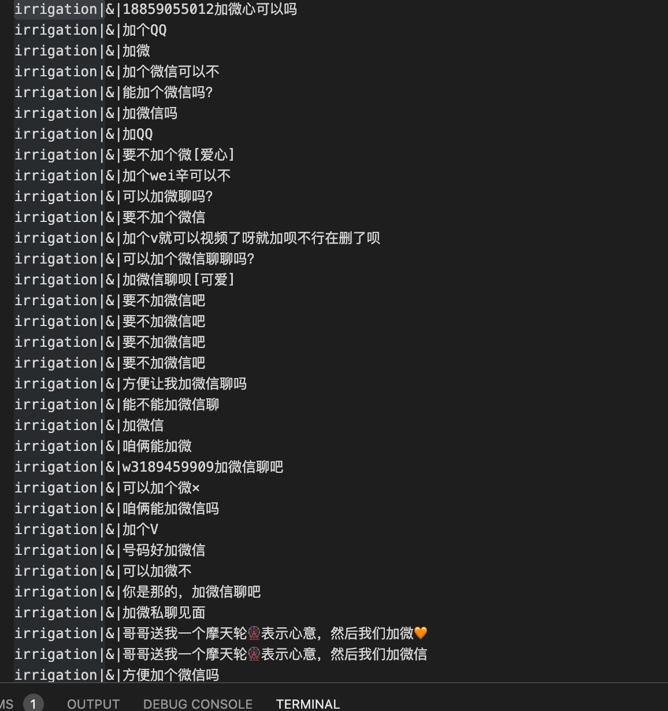
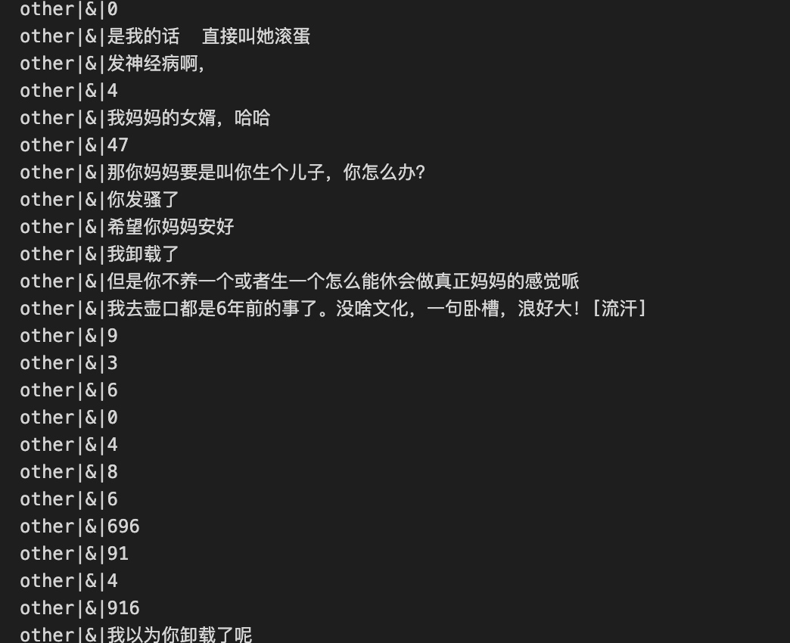
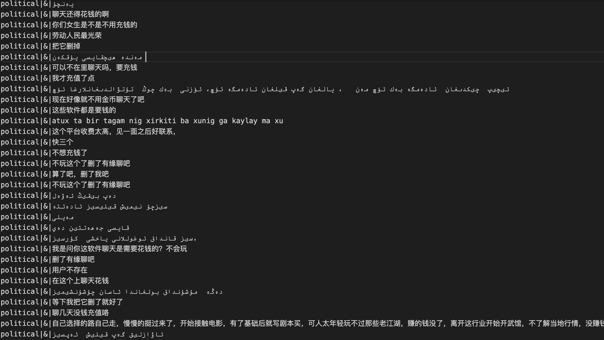
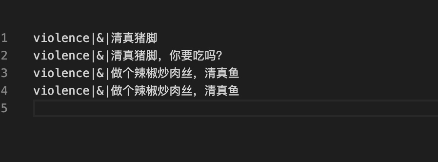
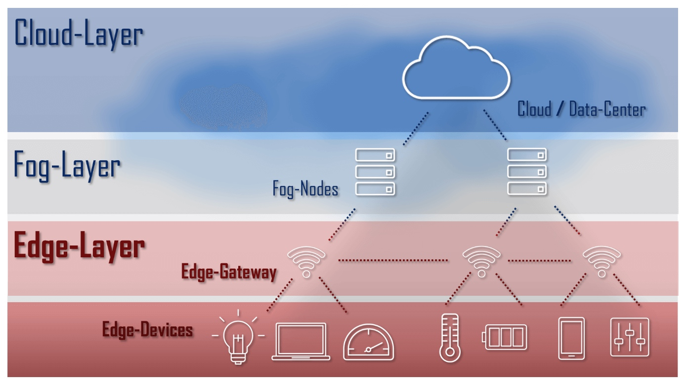
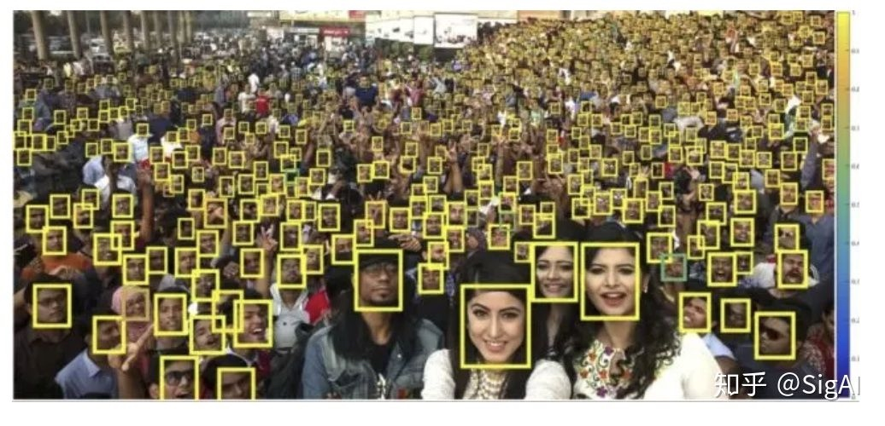
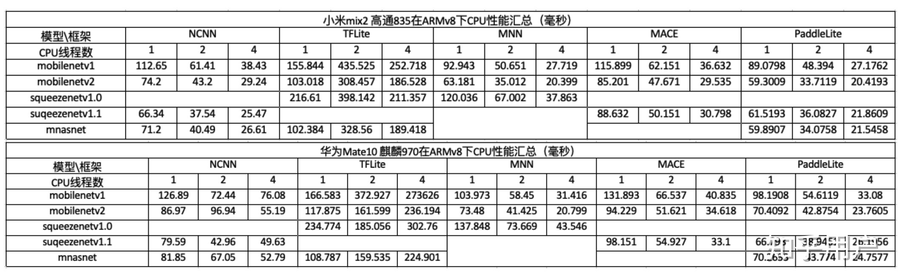
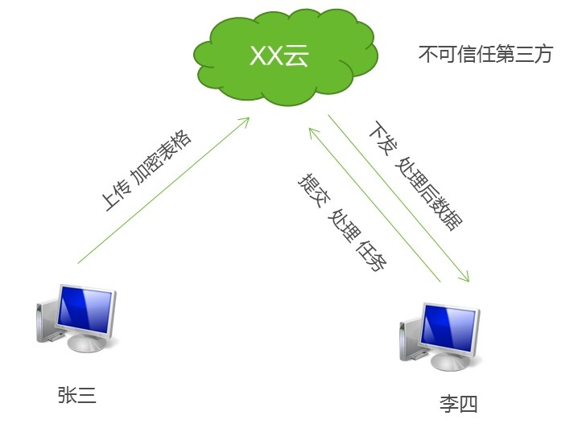

技术调研报告
进展##
现状
- 基本模型训练到模型转换至paddle lite 均走通，@问月(梁伟伟)完成搭建后，测试流程是否ok；
- 易盾数据质量较差，原先定的100万数据，仅有5万条合理数据，联合中台同学拉取1个月数据进行清理，数据情况如下， 量级约为4千万：
| 类别 | 数据量 | 备注 |
|---|---|---|
| Abuse | 14577 | 谩骂  |
|
| Advertisement | 1469817 | 量级大、误报高 
|
| Irrigation | 85514 | 灌水， 整体准确率比较高 
|
| Other | 105281 | 不明白这个分类具体意义： 
|
| Political | 147489 | 感觉该分类准确率过低，基本无正确的， 相关维语的也不是政治相关内容： 
|
| Porn | 499521 | 色情分类整体准确率不错：
|
| Violate | 6758 | 
|
| Violence | 4 | 
|
| 全部（包括正常与以上）| 40534208 ||
发现类别不太适合业务场景，和业务讨论之后，业务方觉得是按传统的pc侧的数据训练，且混合了关键词、敏感词等逻辑， 更改端侧类别如下：
1. 招嫖类：是指各种留联系方式及暗示 变体 这些 ； // Recruit
2. 纯色情类：是指 纯粹的色情文字机器不识别 色情黄段子 隐喻弱色情 弱低俗的； // Porn
3. 谩骂：吵架、谩骂；// Abuse
4. 政治类相对较少：； // 政治 Political
目前清理数据中；
20201013
- 涵淼端侧实时计算基础技术，介绍滴滴的落地场景以及提升8%收益，相关开源工作，本调研报告中也有基础阐述：apacheEdgent；
- 确定样本采集：
- 样本数据采集，暂定100万 @梁工(梁建）；
- 推理引擎paddle-lite调研，做成独立基础组件，内嵌到demo工程里面去，可以跑起来 @问月(梁伟伟) 10.26开始文档调研，11.2 开始搭建demo，13号demo跑通 ；
- 模型管理，后续还有模型下载工作，代码架构设计，异步推理，性能功耗包大小等数据指标；
- 使用样本数据训练，并输出可用模型 @burness(段石石)；
20200923
- 对齐基本需求，做相关调研报告讲述，初步定边缘推理方向为文本审核；
- 边缘侧数据侧定接下来涵淼做相关介绍；
需求场景
云音乐在边缘计算上的需求较为丰富，主要集中在两个点上：
- 边缘数据处理；
- 边缘模型推理；
前者主要目的是缓解基础数据处理在服务端压力， 并且在越来越严的监管压力下，进行某些数据的脱敏处理之后上传，如某些poi，在边缘端在客户端完成提取之后，脱敏上传，扫描更多用户信息，提取相关标签；
边缘模型推理，主要是指将模型部署下发到移动侧，完成推理，如检测直播中是否有人脸出现、评论是否涉黄涉恐等；
本报告接下来分为三个部分来描述业界类似的场景需求，以及相关的技术方案；
边缘数据处理###
业界需求
边缘数据处理

场景一
工业设定的边缘环境（例如海上石油勘探平台）往往缺乏
充足的计算，存储和网络资源有限，且设备生成数据量极大，全部传输不仅占用极大资源，且意义不大，所以业务开发边缘分析程序来进行关键数据的分析、脱敏等操作，之后将处理完成的数据传输至服务器端进行进一步挖掘；
场景二
自动驾驶侧，由于驾驶本身对反馈数据的时延要求极高，将数据传回网络侧进行计算处理，再反馈相应处理逻辑整体耗时随着网络的不稳定而变化极大，在边缘侧计算关键数据的计算，包括模型推理，进行及时的决策反馈；
场景三
欧盟GDPR法规，限制欧盟之外的任何公司， 针对于不符合在隐私数据上规范的公司处以最高罚款为其全球收入的4%或2000万欧，两者取高者。政策越来越严的规范， 数据不离开用户设备必然会成为后续的趋势，这对于推荐、搜索、广告等核心互联网业务会造成毁灭性的打击，边缘侧进行必要的数据处理，传回有价值的、脱敏、符合政策法规的数据，
####云音乐场景####
需求一： 辅助埋点完成脏、乱数据治理，数据生产侧完成数据质量保障
和团队@董有现讨论，目前埋点逻辑由相关产品收集， 反馈至客户端，客户端完成相关功能开发后，由数据团队进行数据质量检查，完成检查之后上线，数据埋点日志落存储，大数据同学再进行相关功能的开发，数据同学反馈会存在很多异常情况（本身数据质量：如数值为空情况、数据明显异常如播放点负数、）， 是否能将脏、乱数据治理，直接落地在边缘侧处理， 脏、乱数据治理，埋点同学最熟悉，可以在此完成逻辑的闭环，如下图展示：

需求二：边缘侧进行数据聚合， 生成更详尽指标
单个指标通常应用到算法，会经过一些基本的聚合处理，比如按时间构造多尺度（天级别、周级别）播放时间、按多source聚合指标，此类指标仅依赖用户本身行为，可选择在边缘侧进行数据聚合，如下图：可以选择边缘侧进行时间聚合、多source聚合，在边缘侧可进行数据异常处理、这部分工作如何在大数据上去做，其实相对还是比较复杂的，因为埋点逻辑不可避免地会落地异常数据，其实在大数据侧很难完全处理掉这部分数据，因而不仅仅是效率问题，边缘侧的数据聚合能够有效地将客户端处理逻辑闭合，提供更高智能、更易用的数据，另一方面，在大数据环境下进行相关数据的聚合，整体资源消耗较大；

需求三：数据敏感，减少法律法规风险
目前国内外隐私相关法律法规如GDPR针对Google、Facebook天价罚款，《中华人民共和国民法典》对隐私权与个人信息保护越来越严，互联网公司尤其是移动侧数据采集，必然越来越严格。对整体数据应用会有极大地影响。移动侧后续在数据采集上，可能需要考虑关键数据的脱敏，同时保证尽可能少地影响算法效果；
###边缘模型推理###
####为什么云音乐需求边缘模型推理####
- 脱机可用性：这可能是最明显的论点。如果无论条件和连接性如何都需要应用程序可用，则必须将智能放置在本地设备中。由于远程蜂窝数据不稳定，DDoS攻击后服务中断或仅仅是因为你的设备正在地下室中使用，会导致连接中断！对于基于云的解决方案来说，这是一个巨大的挑战。但是，如果将智能放在本地设备上，则无需担心；
- 降低云服务成本：云服务非常方便（可扩展性，可用性），但是却代表着相当安规成本，随着越来越多的人使用解决方案，这种成本将会增加，尤其是AI类的推理应用， 这些成本将持续到产品的整个生命周期, 而边缘侧进行模型推理，利用了用户本身的算力来完成相关模型的推理计算，大大降低在类似场景下的成本付出；
- 降低连接成本：边缘侧完成模型就散，仅发送AI的计算结果，就地处理信息可以将带宽消耗除以100倍（对于视频则更多），尤其是对于视频类应用，通常计算集群和存储集群是分开的，完成相关的推理计算，需要频繁地拷贝，若在边缘侧完成模型的推理计算，需要传输的数据将从兆字节的视频将转换为几个字节，比如主播人脸是否存在，而不是将视频数据拷贝至相应地计算集群，完成模型推理，仅仅需要边缘侧完成计算即可；
- 处理机密信息：当可以在本地收集和处理关键信息时，无需将数据传至数据中心处理，但是依然能完成相关地逻辑需求，如通过判断直播场景下是否有人，而非将直播关键的数据实时传输到计算集群上，来进行相关计算，这个成本是极其昂贵的；
- 响应时间至关重要：在本地收集和处理数据很会缩短响应时间，从而改善用户体验，目前的手机侧通常拥有比较不错的算力，能应付一些模型的推理计算；
- 环保：中小型物联网设备每天将发送1MB或更少的数据，大约可以每天估算20g的二氧化碳，经过一年的计算，10,000台设备可产生多达73吨的二氧化碳！在本地进行处理可以将其缩小到730kg， 数据中心电力的消耗也极大，尤其是在进行密集型计算时，单个gpu设备可能达到250w的工作效率，而基于视频或图像的解决方案可能会产生更大的影响，未来在数据搜集上都可能缴税的政策锋线上，碳排放、电力消耗的缴税风险可能更大，其成本也不容忽视；
- 硬件优化到一定程度；
可行性分析
###边缘数据中心与数据处理：进一步贴近接入层###
学术界与行业相关工作
前两年在学术界有相关的文章，如Secure and Sustainable Load Balancing of
Edge Datacenters in Fog Computing，提出Edge Data Center的概念；Potentials, Trends, and Prospects in Edge Technologies:
Fog, Cloudlet, Mobile Edge, and Micro Data Centers也提到边缘侧数据中心，更近地贴近边缘侧完成部分数据的存储、计算，来提供移动侧内计算能力，减少传统数据中心的数据计算压力，提供更稳定时延服务；
业界包括华为、https://www.siemon.com/zh/home/applications/edge在5g上的布局也包括边缘侧完成部署计算，包括组件边缘数据中心，详情见[面向5g的边缘数据中心基础设施](https://e.huawei.com/cn/material/networkenergy/e7940fd56def4524aa1d0e4a8f835f99)、[边缘数据中心](https://www.siemon.com/zh/home/applications/edge)。
边缘数据中心，其目的在于减少边缘侧数据存储计算的时延，尤其是在占大量带宽的数据计算、视频分析等关键AI应用上，相关行业目前技术尤其是数据存储、计算，确实有向边缘侧靠的趋势。
云音乐实际情况
而针对云音乐目前的痛点，尤其是在数据处理时，集群压力极大，目前整体，移动端进行必要的部分数据存储以及部分指标的计算，是比较合理的
- 目前，边缘侧数据处理仅基于用户尺度做较为简单地数据聚合、数据加密、脱敏操作，其计算复杂性不高，理论上可以适合计算；
- 边缘侧完成的更高级指标的计算，能够被大数据工作流直接使用，比原先大数据侧进行数据去脏、去错再进行相关计算，理论上精确度更高；
- 边缘侧完成相关数据的计算前提在于其对数据质量、数据内容有极高的保障，并且有相应地去脏除错逻辑，在此背景下，更易于大数据埋点需求做到解耦合；
- 边缘侧目前cpu、gpu性能较为强劲，边缘侧已经能支持较为复杂的矩阵线性计算，如大kernel cnn，理论上简单地数据处理逻辑理论上不在话下；
###边缘模型推理###
标准化的开发流程
边缘模型推理目前是各大互联网公司着力落地的点，需求比较明显，这里就不详述，主要是将部分模型的推理部署在移动侧，减少由于网络传输带来的安全风险以及时延问题，目前整体的技术方案如下图大概分成以下几个部分，下面会详细描述：

- 离线特征处理：主要目的是生产训练样本，如评论是否涉黄、涉恐分类模型，需要收集评论数据，并标准为相关类别；
- 离线模型训练：使用包括TensorFlow、Paddle、Pytorch等在内的框架来训练相关离线模型；
- 离线模型评估：将训练好的模型在指定的验证集上进行模型评估，得到离线评估指标；
- 模型转换：将训练出来的模型转换为移动侧支持的模型，并附上指定SDK Demo；
- 模型验证：在指定SDK上验证转换生成的模型文件，开发对应的数据处理逻辑，完成模型功能、以及时延验证；
- 模型下发：验证完成之后，通过专有平台将模型批量下发给客户端；
- 模型更新：下发完成后，进行模型文件更新， 将新版本的模型文件以及对应逻辑的包更新；
####离线特征处理####
主要负责生产训练样本，包括特征的基本处理以及样本的标准，如在直播场景下，检测视频当中是否出现主播人脸，人脸检测在直播场景，需要提前标注一定量级的的人脸标注照片， 下图中红框、红点为关键点检测标注信息：
完成标注之后，通常我们会将标注数据处理成适合某些框架训练的数据格式，如TensorFlow下tfrecord。
####离线模型训练####
离线魔性训练，通常我们会用TensorFlow或者Pytorch构造合适的神经网络结构，如针对人脸检测比较出名的MTCNN，MTCNN网络复杂性设计的比较好， 可以在中端手机上部署，完成20~30FPS的检测速率：

####离线模型评估####
离线模型训练之后，我们会在一个合适的数据集上进行模型评估，待数据集上指标满足要求之后，再开始考虑上线，离线评估数据集通常是业务落地时面对的真实数据集，在这个数据上的评估指标，最接近真实数据，通常在满足指标要求，都会经过多轮的迭代，通过data augmentation等数据增广，或者直接补齐某些效果不好场景下的训练数据，来逐步提升模型在各类场景下的鲁棒性；
####模型转换####
模型转换目的是为了将适合服务端计算的模型文件转换为专门针对移动端进行算子优化的框架，如paddle lite提供将其他框架如TensorFlow、Caffe等转换为paddlepaddle的原生工具X2Paddle， 且在转换过程中支持包括量化、子图融合、Kernel优选的优化手段，优化之后的模型更轻量级、耗费资源更少、更适合在移动侧部署，目前比较流行的移动侧框架，网商的某个性能对比：

为了防止对业务造成影响，一般都是单线程使用，且关闭openmp防止帧间波动影响体验，整体结论：
paddle-lite>mnn>ncnn>tflite
另外的如apple本身的Core ML，因为仅支持ios。
####模型验证####
模型验证主要是进行移动端编译的验证，通过这个过程，框架侧会提供一个最简化的演示的sdk，支持build成移动侧的app，然后通过比如adb在手机侧进行推理，评估资源消耗、耗电以及模型推理耗时。
比如paddle lite的一个demo: https://github.com/PaddlePaddle/Paddle-Lite-Demo/tree/master/PaddleLite-android-demo/face_detection_demo
####模型框架集成####
模型验证完成之后，集成到客户端app中，这里需要考虑引入新的模型框架带来的app包体积增大以及app耗时增加的问题，如目前paddle-lite 目前整体包ARMV7只有800K，ARMV8下为1.3M
####模型/框架热更新####
模型部署成功之后，后续模型框架、模型文件更新是比较频繁的，不可能每次发版本来更新客户端的离线模型，主要包括两个部分：
- 模型文件的更新：模型推理框架无需更新，仅更新模型文件；
- 模型推理包的更新：需要更新推理框架以及模型文件；
挑战
###边缘数据处理###
-
相关开源项目比较少， 且活跃度不高：
目前边缘数据处理开源的不多，并且活跃度不大，如下面的apacheEdgent，边缘计算相关的开源框架和产品主要集中在如何组装，采用类似于K8S编排设备的技术来完成边缘设备的编排，主要是针对有限网络下快速的组网、设备管理等工作，做数据处理的封装目前没看到太多的解决方案：- apacheEdgent： https://edgent.incubator.apache.org/；
- Akraino Edge Stack：https://www.lfedge.org/category/akraino-edge-stack/；
- AWS IoT Greengrass: https://aws.amazon.com/cn/greengrass/；
- Azure IoT Edge: https://github.com/Azure/iotedge；
- baetyl: https://github.com/baetyl/baetyl；
- Macchina.io: https://macchina.io/；
目前，在云音乐的需求中，边缘的主要针对于做用户维度的、时间维度的聚合操作，这里需要一些专门的算子，如map、reduce，用于专项处理埋点数据中的转换、聚合操作，这里需要联合客户端同学，可先完成相关功能的封装，建议开始按功能如按天聚合播放时间等case by case 开发，后续抽象出来，由数据组提供相应sdk；
-
脱敏加密数据上传涉及到的隐私保护计算，目前整体积累较差，相关的技术水平要求高：
- 如手机号、身份证这类数据，可在端侧进行脱敏处理，类似手机号、身份证无论在算法还是数据处理上，其实仅充当统一性表示ID， 进行脱敏处理不影响其落地应用，但是否有涉及到比如推送号码包类似应用需要，如有需要，在此类场景下需提供专门解码方法完成加密数据的解码；
- 如有数据保存至公有平台进行数据分析时，可采用同态加密技术，同态加密技术旨在分析可以在不拿到明文数据的前提下，进行数据分析等相关操作；
-
目前无法很好地评估，增加边缘侧数据处理带来的性能问题，如电量耗损、cpu占用过多影响体验、磁盘读写占用等等问题； // 使用闲时处理、闲时上传；
-
边缘侧数据处理和原先类似埋点开发过程中，需要保持一致性的地方，这一块如何保证；
-
原始埋点数据上，增加业务场景线上，两条路走；
###边缘模型推理###
边缘模型推理目前挑战点主要在于:
- 目前虽然移动侧模型推理较为流行，但是并不是所有的训练框架算子均支持移动侧部署，或已在移动侧深度优化，边缘侧部署需要和模型训练侧深度合作；
- 边缘模型将部分模型的app打包到本地，模型以及相关包均在用户侧，这其中可能涉及到模型的相关风险，在一些核心应用，例如身份验证这类场景下，涉及到相关的安防技术，如目前通过deepfake技术使一些人脸识别系统出错， 如何安全的访问模型请求也是现有的挑战；
- 模型定时更新涉及到大规模的模型下发，尤其在云音乐这种规模下的模型下发，这块我们不太熟悉，无法评估风险；
- 模型推理下放到边缘端计算，必然在资源上消耗较多，如果减少资源负载也是必须要要考虑的问题；